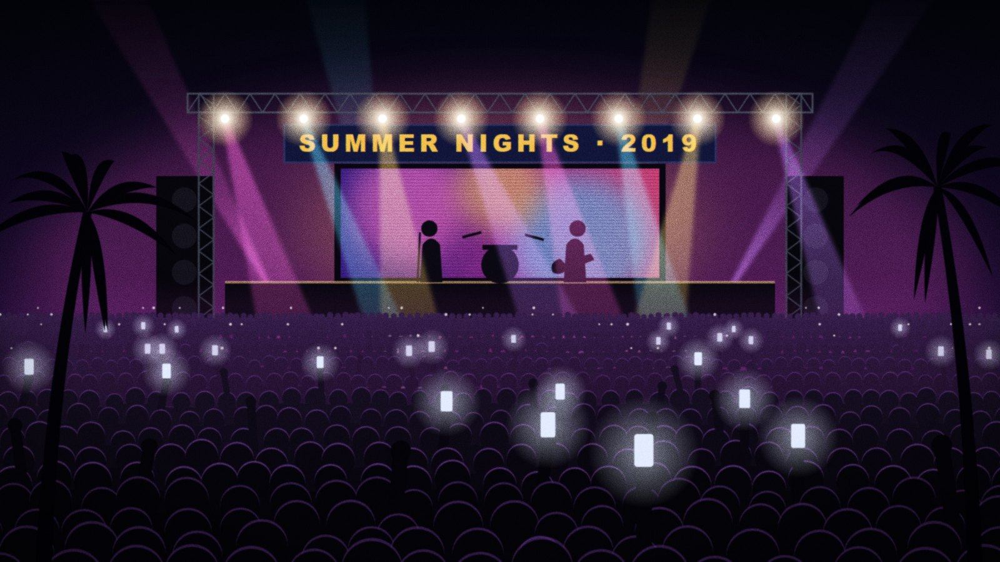

Neighbors for Kahana Jobs rally draws hundreds
Residents packed Kahana Beach Park on Saturday to say no to the easement, organizers said.

Several hundred Windward residents gathered at Kahana Beach Park on Saturday to oppose Measure 7, according to organizers from Neighbors for Kahana Jobs.
"Real neighbors, real jobs," the crowd chanted as speakers took turns at the pavilion. "This is what a community looks like when nobody asks it," said spokesperson Jenna Alcott. "Outside activists wrote this measure. The people who live here are saying no."
Speakers included a small business owner, a young couple who said they hoped to buy their first home on the Windward side, and a retired teacher.
The group formed this summer and says it has more than 2,000 supporters. Its next event is planned for the week before the October 14 county hearing.
The county has not released a crowd estimate. Park staff said the pavilion had been reserved for a gathering of 40.
Reader comments (0)